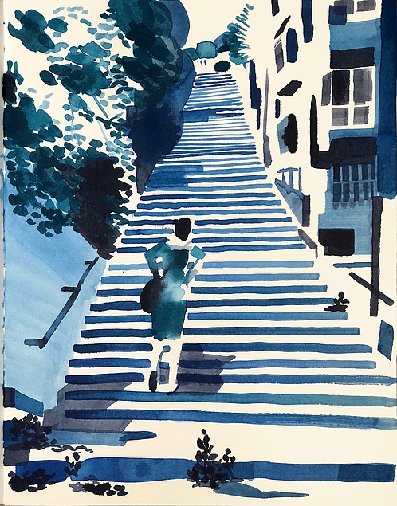

Christoph Niemann
Illustrator, Author
Christoph Niemann is an illustrator, author, and visual storyteller based in Berlin. His resume includes numerous cover designs for The New Yorker (including its first ever augmented reality cover), Wired, and the New York Times Magazine. He's authored a string of children's books and the monographs Sunday Sketching, Words, and Souvenir, and was the first to illustrate the New York Marathon in real-time—while actually running it. In 2008, Niemann relocated with his family to Berlin, in an attempt to switch up his work method. He has since designed two apps, "Petting Zoo," and "Chomp," and has become a prominent voice on social media with his "Abstract Sunday" channels. In 2010 he was inducted into the Art Directors Hall of Fame, and in 2017, the Netflix documentary Abstract: The Art of Design devoted its first episode to his work.
From a conversation with Julian Brimmers.
August 1, 2018
As an illustrator, you’ve been telling other people’s stories all your life. When did you start telling your own story, in books, talks, and interviews?
The first tiny steps in that direction were cover designs for The New Yorker. These covers don’t refer to a story in the magazine but stand for themselves. Also, you don’t get asked to do cover art, you pitch them. Usually someone asks you to make an illustration about, for instance, interest rates or online dating. Pitching cover designs, you have to take the initiative as a storyteller.
When I moved to Berlin, I knew I wanted to make a conscious effort to change up my work. At this time, the New York Times asked me to do a column, which was first called Abstract City, then Abstract Sunday. The task was not only to draw and write the thing, but to deliver the basic concept as well. I found that incredibly difficult, simply because you have so many options. The stress that comes with a deadline can be painful too, but it’s something I’ve learned to deal with. Having total freedom was strange to me.
@Cristoph Niemann, 2018
And that lead you to take more inspiration from your personal life experience?
Yes, almost out of self-defense. You get an assignment like this out of the blue and you ask yourself, well, what do I write about? Especially when you’re used to tackling big issues like politics, the economy, social revolutions. You look at your own life thinking, what do I do, really? I take the kids to school, drink coffee, and sleep poorly. Trusting that my life experience was similar enough to those of the readers to form a connection was a long process, and a little scary.
How deeply connected are you with New York nowadays?
I still have a lot of work over there, but my life is very much centered in Berlin.

@Cristoph Niemann, 2018
Did it feel special in any way to have your first big achievements with U.S. media instead of, say, Der Spiegel?
Of course. I mean, it’s been a long time. But my personal path absolutely has to do with New York as a media city. These references provide you with a certain credibility. Even if achievements of any kind change little to nothing about the reality of one’s work, it does create a sense of trust. Whether for assignments or free works, the most important currency is the principle trust that people put in you. You have to earn it. And therefore you have to be visible.
It’s worth pointing out that I don’t know any U.S. publications that hide the photo/artwork credit in the lower-right corner. Usually you get credited very prominently, because American outlets tend to be proud of their visuals. If you ask about famous illustrators in the U.S., people know who Barry Blitt is, or Chris Ware. I’m not sure that’s the case in Germany. Not because Germans don’t like graphics, or are less intelligent–but if I never come across these names, how would I know them? That doesn’t go for all German publications of course, Süddeutsche Magazin or Zeit Magazin credit their visuals just as prominently and enthusiastically as their text components. In any case, the general idea should always be: if I’m cool, you’re cool too, otherwise we wouldn’t deal with each other in the first place. I’ve always found this type of collaboration very inspiring.
@Cristoph Niemann, 2018
Control and visibility are two themes I wanted to discuss with you. In books, talks, and even interviews, it’s rather easy to control the narrative. However, to what extent was the Netflix documentary Abstract: The Art of Design not just a feature created about you, but also by you?
I had a long chat with the director, Morgan Neville, before we started shooting. He had many ideas. Oftentimes, editors and directors come with certain premeditated ideas about who you are as a person, and that informs the whole shoot. In this case, I had the possibility to clarify a few things in advance. For example, that my Sunday Sketches don’t have anything to do with spontaneity. Or, that these stories about my life are not so much concerned with my actual life as with an attempt to describe a truth that I, hopefully, share with the readers. Me using myself as a protagonist is merely a narrative tool. “Let me tell you about this cute thing my children said yesterday,” that’s the most boring thing ever. But when a character becomes a projection of a shared experience, it really gets interesting.
Sunday Sketching
English Edition published by Abrams, New York. German Edition, published by Knesebeck, Munich
This reminds me of a passage in Scott McCloud’s “Understanding Comics.” He discusses the human phenomenon of recognizing faces in everything, doors, power outlets, etc. Accordingly, Charlie Brown marks the perfect level of abstraction, because his face is not more than a circle with dots. The biggest projection surface possible.
Precisely, and when you go even more abstract, it becomes obscure. That goes for all forms of abstraction. For instance, watching the Lord of the Ring movies, you don’t need any prior knowledge. That’s just a purely formal observation. All characters are created on the canvas. Your life has nothing to do with dwarfs and dragons, all these things happen on a one-way street right into your brain. Except through sensations like fear, worry, and empathy, the film doesn’t relate to your real-life experiences.
An abstract comic like Charlie Brown, however, works only on the basis of your own childhood memories. The pain and the story already live inside you, and through the character, are brought up from your subconscious. It’s similar to working with a psychiatrist, who might seem to get the story out of you, but you’re actually the one who has to deliver it.
I’ve recently talked with your New Yorker-colleague Hua Hsu about the fanzines of his youth. He mentioned that every piece of writing on the Internet is viral content waiting to happen, whereas pre-internet…
…you simply wrote into the ether, precisely. Even when you had an article in the New York Times you received maybe two letters from readers. You never knew who you did it for–or, it was for your editor, essentially. Nowadays, you know exactly that this one posting was 23.7% more successful than the other. This type of reach-thinking and all these things… they’re not that good. Actually, they’re not good, period.
But if it didn’t have any positive aspects or evoke emotions of joy, we wouldn’t subscribe to all these social media channels in the first place.
Sure, and I’m the last person who could complain about any of this, since it has served me tremendously well. The greatest aspect of this whole Instagram/Twitter world lies in the fact that it has proven the general public to be much smarter than previously assumed. Take meme culture. Regardless of whether you think it’s high art, when you look at memes it becomes apparent that people not only understand subtle picture-text compositions—they’re also able to play around with them. You’d never get these subtle twists in an editorial meeting. As soon as visuals were concerned it was “Woah, nope, let’s go with the man with the suitcase and let’s add some labels about what’s happening here.” The visual world is remarkably more interesting now than it was twenty years ago.
Do you think clients approach you for a certain visual style?
When I first came to New York it was my great luck that my portfolio did not showcase one specific visual style or technique. I had everything in there, from vector graphics to pixel drawings. My thing has always been the idea itself. If someone approaches me with a fixed idea, the conversation is pretty much over. Not because their ideas are bad, but if you already know what you want to do, there are better people out there to execute it to your liking. The reputation that brought me assignments was: we can call him when we don’t know what to do. I was a bit like the fire department. More than a specific visual style, my trademark has always been to autonomously, swiftly, and conceivably map out and execute an idea. Nobody ever approached me asking for a drawing of, say, a dinosaur with a fridge as a head done “in my style.”
@Cristoph Niemann, 2018
That’s so specific, it’s hard to believe no one ever asked you for this…
[laughs] No, I just came up with that. People tend to ask me for an idea, and then I’m the one to say, why don’t we do a fridge-headed dinosaur.
How does one learn and teach these skills? Or is that mostly talent?
For the most part it’s pure craft. It’s all about the division of artistic vanity from the evaluation of your piece, which is extremely hard to do. Whether something works or not is almost a binary concept. One or zero. However, that doesn’t translate to, “Am I a bad artist or a good artist?” It’s more like a game of basketball that you’ve lost by four points. The question should be: where can I get these four points from? And for that, there are methods that have to do with abstraction, realism, and readability. One of the most important practices during my studies was to draw a series and ask my fellow students, what do you actually see here?
@Cristoph Niemann, 2018
So what does your process of moving towards a functional idea look like?
Every surprise comes with a set-up. Let’s say, someone walks down the street with an umbrella and for some reason there are zeros and ones falling from the sky. “Data flood” or something, I don’t know [laughs]. Now I have to draw this character in a way that it becomes apparent that this character is not Kate Moss, but just anybody. A regular person with an umbrella on a normal, rainy day. It can’t look funny or sad either. It’s not easy drawing a character like that.
The universal character?
Exactly, the universal character. Now let’s say for some reason there are tiny hearts falling from the clouds. The character is supposed to be desperate, but the picture suggests that there’s still hope. It’s not yet a specific person, but it has to have a sense of personality. You have to be able to emphasize with him or her. So I have to adjust the temperature of that character a tiny bit, add a few more human qualities to project my emotions onto. And then, in another case, I’m asked to draw George Clooney walking down the rainy street. It’s this progression–going from completely abstract to very concrete–that you should ideally have mastered.
Drawing a story is not unlike editing a text. Do I add this adjective or leave it out? The central questions always need to be, how do I get the reader from A to B? If I drown them in descriptions, I lose the story. If I’m too economic, there’s no emotional connection. Everything I add or lose is based on the question of what happens communicatively. And this skill can be practiced like a musical instrument.
@Cristoph Niemann, 2018
Is it important that there is a similarity of values between you and your client?
I mean, ideally, yes. But at the same time, I think that if you work as broadly as I do, and frankly most designers do, there simply are certain things you’re good at. If you’re a font designer, you know how to develop a good, screen-based font. What people will write using this font is beyond your control. So if someone approaches me for a drawing about customer service, I can do that in a nice and empathetic manner. But if it actually needs to mirror the product, or the philosophy that’s really behind this corporation, that is a different story.
I do have the luxury of being able to thoroughly check out these things and pick who I want to work with. However, much more important to setting up a good client relationship is the level of communication you have. Oftentimes you verbally discuss non-verbal matters. If you don’t have a good communication system, getting an idea across becomes really hard. On the other hand, so does formulating an adequate critique. In that respect, a common language and a shared ethical coordination system is key. If we fight over whether or not a picture is “good,” and we have entirely different notions of what “good” is, we have a problem. Regardless of whether we think we’re working for the best product or the most meaningful article.
@Cristoph Niemann, 2018
You frequently discuss the necessity of being a strict editor for yourself.
Yes, but even when doing work for yourself, you need people to help you out. To me, art directors, editors, and curators are generally extremely helpful people. Sure, the cliché editor who kills your brilliant idea because he feels his readers are not ready for it exists. But for the most part, we’re speaking about people who can help you with an outside perspective. Especially with more self-directed ideas, I’m totally depending on this second pair of eyes.
Circling back to the notion of craft once more: with regards to your creative process, you talk about two different concepts of unhappiness. One of your best-known cartoons explains your feelings at work, using the happy face and the sad face emoji. Just to be sure, the hardship you describe here is not the same as the belief that one has to suffer to create art?
Exactly, that’s not the same. I considerably changed my approach to this over the years. As an example, let’s say a ballerina levitates over the stage like a snowflake. If I want to be a ballerina too, it would be a huge mistake to assume I’d have to feel like a snowflake as well. Instead, I have to hit the gym and sweat a lot. Performing this feeling on stage is a matter of utmost concentration and physical tension.
If my main goal at work is to transmit a certain intellectual lightness, then the only way to achieve this is through strict editorial decisions. Some drawings take 20 drafts to look like they came together in five seconds. The underlying attitude is one of tension. The main takeaway of writing a book like Sunday Sketching is: tension is good, but this awful feeling of “the world’s falling apart” actually hinders your work.
In sports, no one runs up and down the pitch with a smile on their face—you have to be in fight mode. On the other hand, when you’re constantly worried about losing the game, you can’t play either. Essentially, you have to develop so much routine that you can work with a clear head, but try to do so with a basic, good-humored attitude. But that has nothing to do with “Oh, I’m having such a great time.”
@Cristoph Niemann, 2018
Spontaneity, lightness—these are the effects many people attribute to your work. But in fact, your creative process mostly consists of trial and error, conceiving concepts, and revising them over and over?
I think this contrast marks the main source of suffering for any creative in any field. The crazy thing is, I wrote a book about it, and it still happens to me all the time. It’s like raising kids or moving somewhere–after a while you forget how hard it really was. You look at your body of work, and you know all too well how exhausting those individual pieces were, but after a while, finished pieces get a sense of authority. They loom over you all monolithically and perfect, and leave you thinking, “Damn, last year you still had it.” But deep down you know how desperately you sat in front of the page and had no idea where the journey would take you. But now you’re stuck with the results, standing there all confidently, glaring at you. It’s easy to despair over that.
@Cristoph Niemann, 2018
On the other hand, given that we’re talking about a resume including The New Yorker and New York Times Magazine covers, pieces in all major publications, exhibitions, books, etc.–one might ask what kind of validation is needed to get rid of those thoughts?
That’s another underlying curse that you just can’t get rid off. Imagine you’re a doctor who specializes in difficult surgeries. You excel 500, even 1,000 times. Everyone’s happy that you do this one thing perfectly well every time. If you’re a soccer pro and you score every penalty–happy days! However, in our world, if you scored a perfect penalty, you can never kick it the same way. If you’ve written a novel, the next one has to be different. Even if it’s slightly similar, they’ll say you’ve run out of ideas. The great thing about our job is, you can do new things all the time. The curse is, you have to do new things all the time [laughs].
@Cristoph Niemann, 2018
Christoph Niemann recommends: